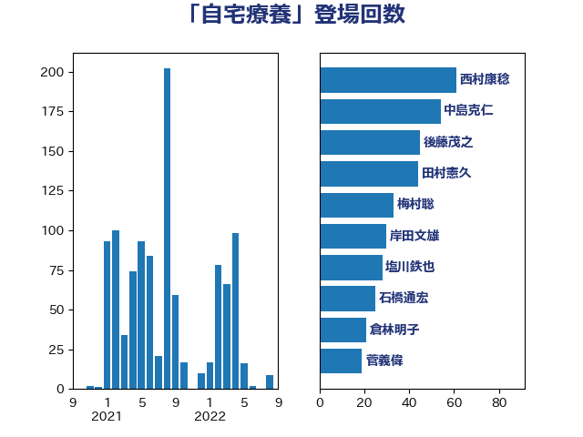

単語「自宅療養」

| 西村康稔 | 自由民主党 | 61 回 |
| 中島克仁 | 立憲民主党 | 54 回 |
| 後藤茂之 | 自由民主党 | 45 回 |
| 田村憲久 | 自由民主党 | 44 回 |
| 梅村聡 | 日本維新の会 | 33 回 |
| 岸田文雄 | 自由民主党 | 30 回 |
| 塩川鉄也 | 日本共産党 | 28 回 |
| 石橋通宏 | 立憲民主党 | 25 回 |
| 倉林明子 | 日本共産党 | 21 回 |
| 菅義偉 | 自由民主党 | 19 回 |
| 山際大志郎 | 自由民主党 | 17 回 |
| 宮本徹 | 日本共産党 | 14 回 |
| 東徹 | 日本維新の会 | 12 回 |
| 長妻昭 | 立憲民主党 | 12 回 |
| 福島みずほ | 社会民主党 | 11 回 |
| 道下大樹 | 立憲民主党 | 11 回 |
| 小西洋之 | 立憲民主党 | 10 回 |
| 山本太郎 | れいわ新選組 | 10 回 |
| 森山浩行 | 立憲民主党 | 10 回 |
| 江田憲司 | 立憲民主党 | 10 回 |
| 浦野靖人 | 日本維新の会 | 9 回 |
| 田島麻衣子 | 立憲民主党 | 9 回 |
| 塩田博昭 | 公明党 | 8 回 |
| 山本博司 | 公明党 | 8 回 |
| 櫻井充 | 自由民主党 | 8 回 |
| 川田龍平 | 立憲民主党 | 7 回 |
| 石井苗子 | 日本維新の会 | 7 回 |
| 平木大作 | 公明党 | 6 回 |
| 本村伸子 | 日本共産党 | 6 回 |
| 武田良太 | 自由民主党 | 6 回 |
| 重徳和彦 | 立憲民主党 | 6 回 |
| 野間健 | 立憲民主党 | 6 回 |
| 高橋光男 | 公明党 | 6 回 |
| こやり隆史 | 自由民主党 | 5 回 |
| 山田勝彦 | 立憲民主党 | 5 回 |
| 打越さく良 | 立憲民主党 | 5 回 |
| 玉木雄一郎 | 国民民主党 | 5 回 |
| 田村智子 | 日本共産党 | 5 回 |
| 美延映夫 | 日本維新の会 | 5 回 |
| 蓮舫 | 立憲民主党 | 5 回 |
| 伊佐進一 | 公明党 | 4 回 |
| 天畠大輔 | れいわ新選組 | 4 回 |
| 山口那津男 | 公明党 | 4 回 |
| 水岡俊一 | 立憲民主党 | 4 回 |
| 浅野哲 | 国民民主党 | 4 回 |
| 石井啓一 | 公明党 | 4 回 |
| 逢坂誠二 | 立憲民主党 | 4 回 |
| 高橋千鶴子 | 日本共産党 | 4 回 |
| 串田誠一 | 日本維新の会 | 3 回 |
| 城井崇 | 立憲民主党 | 3 回 |
| 山井和則 | 立憲民主党 | 3 回 |
| 岡本あき子 | 立憲民主党 | 3 回 |
| 平山佐知子 | 無所属 | 3 回 |
| 杉尾秀哉 | 立憲民主党 | 3 回 |
| 杉本和巳 | 日本維新の会 | 3 回 |
| 泉健太 | 立憲民主党 | 3 回 |
| 矢倉克夫 | 公明党 | 3 回 |
| 福山哲郎 | 立憲民主党 | 3 回 |
| 篠原孝 | 立憲民主党 | 3 回 |
| 羽田次郎 | 立憲民主党 | 3 回 |
| 赤木正幸 | 日本維新の会 | 3 回 |
| 逢沢一郎 | 自由民主党 | 3 回 |
| 青柳陽一郎 | 立憲民主党 | 3 回 |
| 馬場伸幸 | 日本維新の会 | 3 回 |
| 高木かおり | 日本維新の会 | 3 回 |
| 井上哲士 | 日本共産党 | 2 回 |
| 井坂信彦 | 立憲民主党 | 2 回 |
| 伊藤俊輔 | 立憲民主党 | 2 回 |
| 伊藤孝恵 | 国民民主党 | 2 回 |
| 佐藤英道 | 公明党 | 2 回 |
| 宮本岳志 | 日本共産党 | 2 回 |
| 小川淳也 | 立憲民主党 | 2 回 |
| 山下芳生 | 日本共産党 | 2 回 |
| 山添拓 | 日本共産党 | 2 回 |
| 岩屋毅 | 自由民主党 | 2 回 |
| 本田顕子 | 自由民主党 | 2 回 |
| 松野博一 | 自由民主党 | 2 回 |
| 枝野幸男 | 立憲民主党 | 2 回 |
| 柚木道義 | 立憲民主党 | 2 回 |
| 横沢高徳 | 立憲民主党 | 2 回 |
| 清水真人 | 自由民主党 | 2 回 |
| 漆間譲司 | 日本維新の会 | 2 回 |
| 熊谷裕人 | 立憲民主党 | 2 回 |
| 牧山ひろえ | 立憲民主党 | 2 回 |
| 白石洋一 | 立憲民主党 | 2 回 |
| 石川香織 | 立憲民主党 | 2 回 |
| 福岡資麿 | 自由民主党 | 2 回 |
| 秋野公造 | 公明党 | 2 回 |
| 竹谷とし子 | 公明党 | 2 回 |
| 谷田川元 | 立憲民主党 | 2 回 |
| 長友慎治 | 国民民主党 | 2 回 |
| 長谷川淳二 | 自由民主党 | 2 回 |
| 阿部知子 | 立憲民主党 | 2 回 |
| 中山展宏 | 自由民主党 | 1 回 |
| 中谷一馬 | 立憲民主党 | 1 回 |
| 仁木博文 | 無所属 | 1 回 |
| 伊藤岳 | 日本共産党 | 1 回 |
| 佐藤茂樹 | 公明党 | 1 回 |
| 務台俊介 | 自由民主党 | 1 回 |
| 原口一博 | 立憲民主党 | 1 回 |
| 吉川元 | 立憲民主党 | 1 回 |
| 吉田はるみ | 立憲民主党 | 1 回 |
| 和田政宗 | 自由民主党 | 1 回 |
| 塩村あやか | 立憲民主党 | 1 回 |
| 大串博志 | 立憲民主党 | 1 回 |
| 大西健介 | 立憲民主党 | 1 回 |
| 守島正 | 日本維新の会 | 1 回 |
| 山下雄平 | 自由民主党 | 1 回 |
| 山田美樹 | 自由民主党 | 1 回 |
| 島村大 | 自由民主党 | 1 回 |
| 後藤祐一 | 立憲民主党 | 1 回 |
| 志位和夫 | 日本共産党 | 1 回 |
| 早稲田ゆき | 立憲民主党 | 1 回 |
| 杉田水脈 | 自由民主党 | 1 回 |
| 松本尚 | 自由民主党 | 1 回 |
| 柘植芳文 | 自由民主党 | 1 回 |
| 森屋宏 | 自由民主党 | 1 回 |
| 森屋隆 | 立憲民主党 | 1 回 |
| 橋本岳 | 自由民主党 | 1 回 |
| 武部新 | 自由民主党 | 1 回 |
| 池下卓 | 日本維新の会 | 1 回 |
| 浜口誠 | 国民民主党 | 1 回 |
| 浜地雅一 | 公明党 | 1 回 |
| 玄葉光一郎 | 立憲民主党 | 1 回 |
| 田中健 | 国民民主党 | 1 回 |
| 石井章 | 日本維新の会 | 1 回 |
| 石垣のりこ | 立憲民主党 | 1 回 |
| 石川大我 | 立憲民主党 | 1 回 |
| 磯崎仁彦 | 自由民主党 | 1 回 |
| 舞立昇治 | 自由民主党 | 1 回 |
| 衛藤晟一 | 自由民主党 | 1 回 |
| 谷合正明 | 公明党 | 1 回 |
| 谷川とむ | 自由民主党 | 1 回 |
| 金村龍那 | 日本維新の会 | 1 回 |
| 鈴木俊一 | 自由民主党 | 1 回 |
| 鈴木義弘 | 国民民主党 | 1 回 |
| 鳩山二郎 | 自由民主党 | 1 回 |